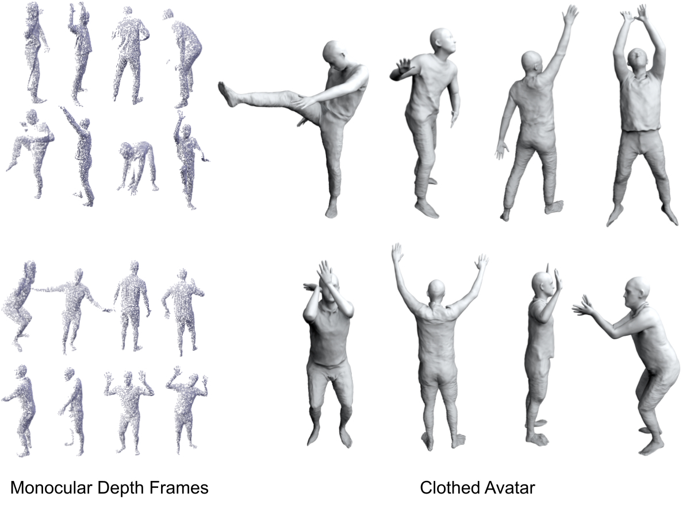
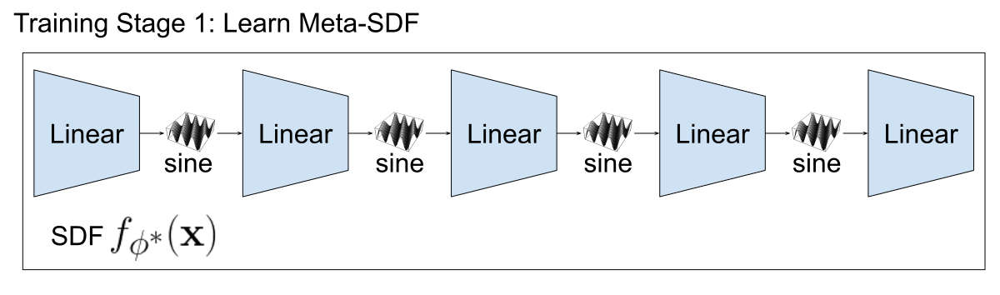
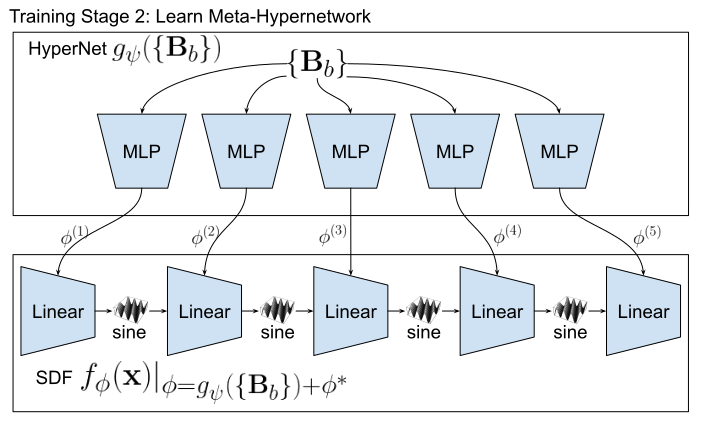

Inspired by recent advances in meta-learned initializations for neural implicit representations, we propose to use meta-learning to effectively incorporate cloth-deformation priors for clothed humans, thus enabling fast fine-tuning (few minutes) for generating neural avatars given only a few monocular depth images of unseen clothed humans and their corresponding SMPL fittings as inputs.

Overview
We follow the same pipeline of recently proposed SCANimate, which learns dynamic neural SDFs from dense full-body scans to represent subject/cloth-type specific avatars of clothed humans. Instead of learning subject/cloth-type specific models from scratch, we propose to meta-learn a prior model which can be fast fine-tuned to represent any subject/cloth-type specific neural avatars given only monocular depth frames.

Our key contribution is a meta-learned hypernetwork that can be fine-tuned to represent subject/cloth-type specific neural SDFs given only a few monocular depth frames. In practice, we decompose the training into two stages 1) meta-learn a static neural SDF 2) meta-learn a hypernetwork which predicts residuals to the parameters of the previously meta-learned static neural SDF.

